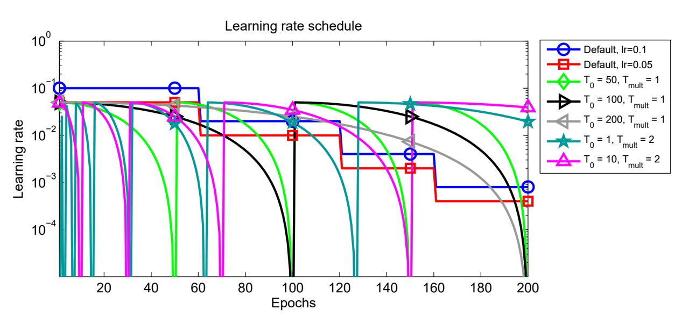
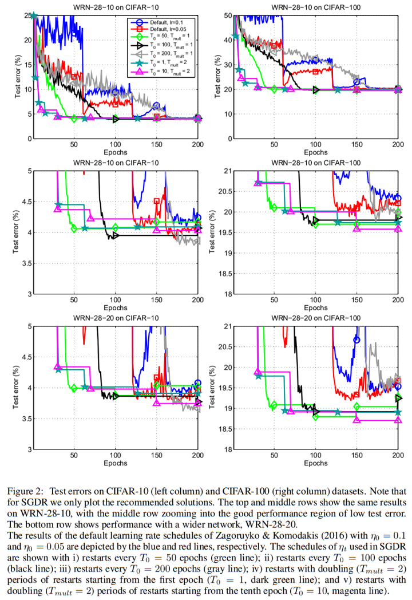
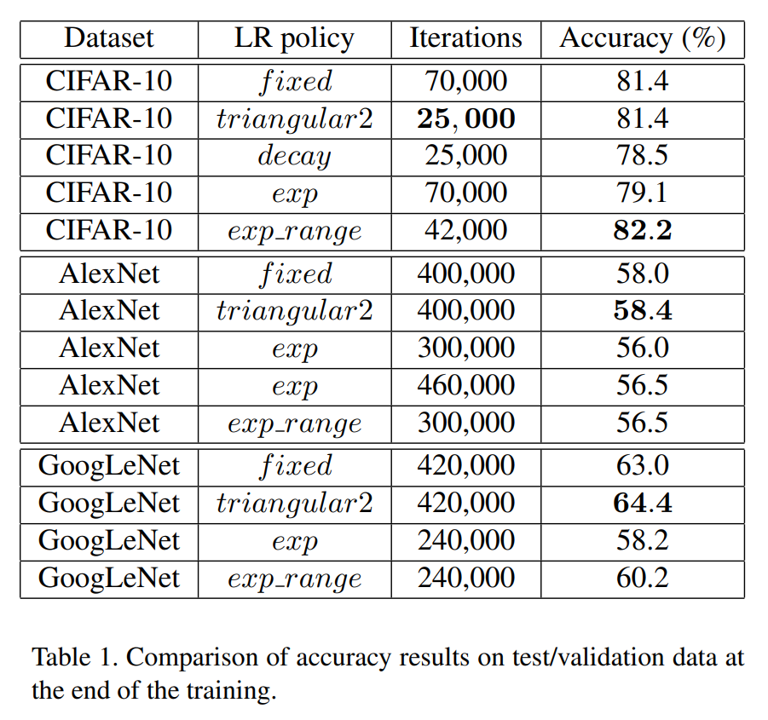
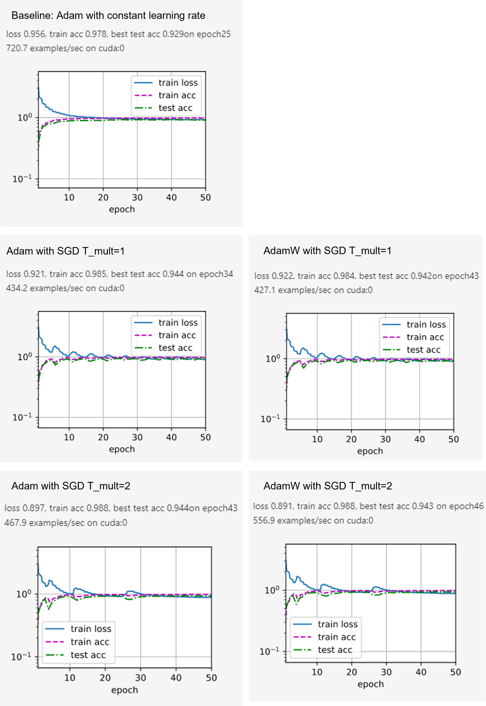

learning rate schedule
Last update：15 hours ago
Learning rate schedule is one commonly used trick to control the process of training. Different kinds of learning tricks are presented every day. In this article, I have put together classical methods theories and apply them in this little competition.
Recently, I joined a Kaggle image classification competition, I used the pretrained ResNet50 plus other tricks and here is to record some of them I've learned for now.
Introduction
Learning rate is one critical parameter in alliterative algorithms, including PDE and ODE solving, optimization, and eigenvalue calculation. In the deep learning area, the learning rate is more than critical because of the notorious difficulty on Stochastic gradient descent.
Strictly, there are two ways of adjusting the learning rate:
learning rate scheduling:
adjust the global learning rate during iteration
adaptive learning rate:
adjust the learning rate for each parameter based on their gradients updates(moments), also called adaptive gradient or gradient descent optimization.
In this article, learning rate schedule is mainly discussed. Afterward, "learning rate" refers to the "global learning rate".
Methods of learning rate scheduling
Apart from the constant learning rate, there are several ways to schedule the learning rate:
- change with epoch numbers
learning rate decay: linear, step...
learning rate down then up: stochastic gradient descent with warm restarts(SGDR) and Cyclical Learning rates(CLR)
warmup
- change on some validation measurements: plateau
learning rate decay
Under the upper concepts of decaying the learning rate while training, how to choose a specific decay policy is personal. It can be continuous or step, linear or polynomial, exponential or trigonometric.
In articles, stepped learning rate decay is more often used as the default choice. For example, Zagoruyko, S., & Komodakis, N set the initial learning rate as 0.1 and drop it by 0.2 every 60 epochs on their modified version of ResNet. And this version of learning rate decay is set as the control group to compare with the SGDR strategy later in Ilya Loshchilov & Frank Hutter's work. And in practice, the cosine annealing policy is a common choice today and can be used either alone or in combination with warmup and SGDR.
Explanation
Because of the presence of stochastic noise, the entire gradient descent process is not straightforward. With a constant learning rate, as shown in the gradient contour map below, the minima can not be reached with a constant step (blue) due to the relatively small steps at the bottom. And a lower minimum can be reached if the learning rate descends with the gradient i.e. epoch(green).

#### SGDR and CLR
##### SGDR
Stochastic gradient descent with warm restarts(SGDR) is firstly proposed to Deep learning in Ilya Loshchilov & Frank Hutter's work. They introduced a policy of reinitializing the learning rate every certain number of epochs. Applying cosine annealing learning rate decay during each resulting "mini-run", the results perform fascinating.


As shown in the charts, compared to 2 default step learnin rate decay policies, they enacted several SGDR policies with different T_0 and T_mul. T_0 refers to the epoch interval of the first "mini-run" and the epoch interval is multiplied by T_mul after each restart. As a result, at the ith "mini-run", T_i = T_0*T_mul^(i)
And they suggests a SGDR policy with a small T0 = 1 or 10 at start, and set Tmult = 2 to double the epoch interval after every restart. And they claim by this policy, at least 2× to 4× fewer epochs are required to achieve a comparable result than before.
##### CLR
A similar method called cyclical Learning rates(CLR) is proposed later by Leslie N. Smith, where 2 kinds of triangular and exponential CLR policies are demonstrated on CIFAR-10 and CIFAR-100 with most kinds of mainstream CNN modules.

Similarly, compared with a default fixed learnin rate, the demonstrats that their policies outperforms in accuracy and efficiency on several datasetes.
one obtains the same test classification accuracy of 81.4% after only 25, 000 iterations with the triangular2 policy as obtained by running the standard hyper-parameter settings for 70, 000 iterations.
##### explanation
Because of the nonconvexity, it is common sense that reaching a global minima is impossible. With a standard learning rate decay, a saddle point, or unstable local minima is more likely to trap the descending process as shown below. But cyclical Learning rates(CLR) and stochastic gradient descent with warm restarts(SGDR) would allow the process to “jump” from one local minimum to another regularly until a stable one.


Still there are several choices, but Cosine Cyclical and Cosine Annealing with Warm Restarts are more common.
#### learning rate warmup
Learning rate warmup is first applied in the famous Resnet paper in one of its experiments.
In this case, we find that the initial learning rate of 0.1 is slightly too large to start converging5 . So we use 0.01 to warm up the training until the training error is below 80% (about 400 iterations), and then go back to 0.1 and continue training.
And later Goyal and He's work makes a major influence, where constant and gradual methods of warmup are discussed. And gradual warmup is proved to be effective on large minibatch size.
As we discussed, for large minibatches (e.g., 8k) the linear scaling rule breaks down when the network is changing rapidly, which commonly occurs in early stages of training. We find that this issue can be alleviated by a properly designed warmup [16], namely, a strategy of using less aggressive learning rates at the start of training.

In practice, warmup are always combined with other learning rate methods afterwards. And linear warmup is a default method.
#### Reducing the learning rate on plateau
Apart from methods scheduling the learning rate with epoch, a dynamic learning rate decay method is also an option. It denotes the process of decaying the learning rate only when the optimizer fails to improve the accuracy or decrease the loss in serval epochs.
For example, in AlexNet,
The heuristic which we followed was to divide the learning rate by 10 when the validation error rate stopped improving with the current learning rate. The learning rate was initialized at 0.01 and reduced three times prior to termination.
In Resnet after the warm-up,
The learning rate starts from 0.1 and is divided by 10 when the error plateaus
Apply learning rate scheduling in PyTorch
torch.optim.lr_schedulerprovides several methods to adjust the learning rate based on the number of epochs.
For example,
def train_ch6(net, train_iter, test_iter, num_epochs, lr, device):
print('training on', device)
net.to(device)
optimizer = torch.optim.Adam(net.parameters(), lr=lr)
scheduler = torch.optim.lr_scheduler.CosineAnnealingLR(optimizer, num_epochs*len(train_iter)/10, eta_min=1e-9)
loss = LSR(0.1)
for epoch in range(num_epochs):
net.train()
for i, (X, y) in enumerate(train_iter):
X, y = X.to(device), y.to(device)
optimizer.zero_grad()
y_hat = net(X)
l = loss(y_hat, y)
l.backward()
optimizer.step()
scheduler.step()Apart from well defined lr_scheduler , torch.optim.lr_scheduler.LambdaLR allow us to apply self define scheduler such as:
print('training on', device)
net.to(device)
optimizer = torch.optim.Adam(net.parameters(), lr=lr)
t=10*len(train_iter)#warmup
T=num_epochs*len(train_iter)
lambda1 = lambda epoch: (0.9*epoch / t+0.1) if epoch < t else 0.1 if 0.5 * (1+math.cos(math.pi*(epoch - t)/(T-t)))<0.1 else 0.5 * (1+math.cos(math.pi*(epoch - t)/(T-t)))
scheduler = torch.optim.lr_scheduler.LambdaLR(optimizer, lr_lambda=lambda1)
# plot learningrate_decay
lr_plot = []
for _i in range(num_epochs):
for _j in range(len(train_iter)):
optimizer.step()
lr_plot.append(optimizer.param_groups[0]["lr"])
scheduler.step()
plt.plot(lr_plot)Should we do scheduling with adaptive learning rate method?
From Should we do learning rate decay for adam optimizer?, I found it as a arguable question.
It depends. ADAM updates any parameter with an individual learning rate. This means that every parameter in the network has a specific learning rate associated.
But* the single learning rate for each parameter is computed using lambda (the initial learning rate) as an upper limit. This means that every single learning rate can vary from 0 (no update) to lambda (maximum update).
It's true, that the learning rates adapt themselves during training steps, but if you want to be sure that every update step doesn't exceed lambda you can than lower lambda using exponential decay or whatever. It can help to reduce loss during the latest step of training, when the computed loss with the previously associated lambda parameter has stopped to decrease.
In my experience it usually not necessary to do learning rate decay with Adam optimizer.
The theory is that Adam already handles learning rate optimization (check reference) :
"We propose Adam, a method for efficient stochastic optimization that only requires first-order gradients with little memory requirement. The method computes individual adaptive learning rates for different parameters from estimates of first and second moments of the gradients; the name Adam is derived from adaptive moment estimation."
As with any deep learning problem YMMV, one size does not fit all, you should try different approaches and see what works for you, etc. etc.
Yes, absolutely. From my own experience, it's very useful to Adam with learning rate decay. Without decay, you have to set a very small learning rate so the loss won't begin to diverge after decrease to a point.
But in the article Decoupled weight decay regularization(AdamW), it is encouraged.
Adam can substantially benefit from a scheduled learning rate multiplier. The fact that Adam is an adaptive gradient algorithm and as such adapts the learning rate for each parameter does not rule out the possibility to substantially improve its performance by using a global learning rate multiplier, scheduled, e.g., by cosine annealing.
In the CLR article, the authors encourage the combination of CLR methods with Adam as well.
Adaptive learning rates are fundamentally different from CLR policies, and CLR can be combined with adaptive learning rates, as shown in Section 4.1. I
All in all, theoretically, the adaptive learning rate methods such as Adam adjust the learning rate for each parameters under a upper limit as the global learning rate, which can be adjusted by scheduling.
In practice, at least SGDR and CLR have been proved to be useful combining with optimizers.
Experiment: Adam vs Adam + SGDR
In this little experiment, the best setting in the last article is set as baseline, with Adam with constant learning rate. Leave other settings, Adam with cosine annealing learning rate, and AdamW with cosine annealing learning rate are compared.
global learning rate = 0.005
scheduler = torch.optim.lr_scheduler.CosineAnnealingWarmRestarts(optimizer, T_0 = **int**(num_epochs***len**(train_iter)/10), T_mult=1, eta_min=1e-9)

As shown in the line charts, SGDR lift both the training and test accuracies. And the overfitting of the baseline method is alleviated as well.
In the second and sub-figure, the fluctuation in the process of gradient descend caused by the cosine learning rate is obvious. And after each learning rate restart, the rate of the descend also gets a restart. And it takes fewer epochs than to get the same accuracy than the baseline.
Reference
Learning Rate Schedules and Adaptive Learning Rate Methods
Learning Rate Decay and methods in Deep Learning
A Newbie’s Guide to Stochastic Gradient Descent With Restarts
Zagoruyko, S., & Komodakis, N. (2016). Wide residual networks. arXiv preprint arXiv:1605.07146.
torch.optim — PyTorch 1.10 documentation
This blog is licensed under a CC BY-SA 4.0 licience